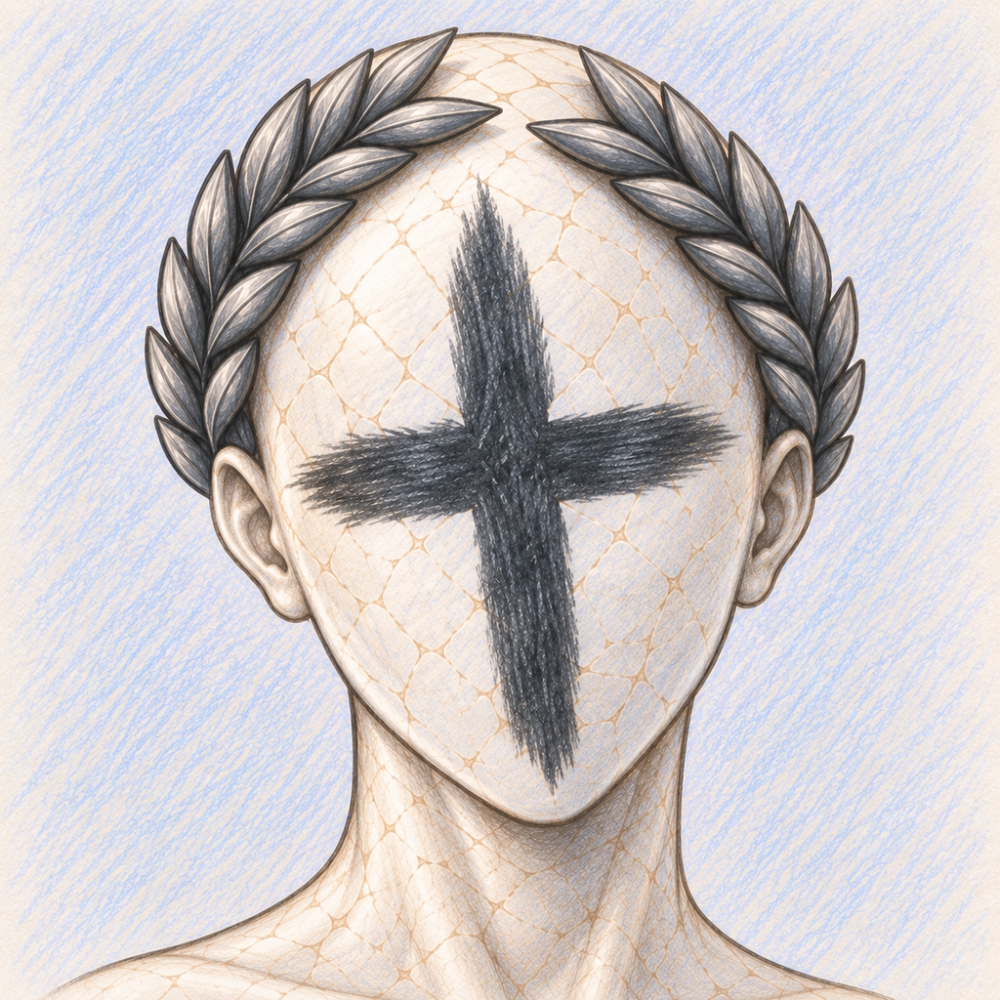

Prism Rows
Um jogo de quebra-cabeça sobre cores, figuras conectadas, linhas planejadas, efeitos GEM e modos de jogo em evolução.

Desenvolvedor
Jogos, mods e links oficiais de projetos em um só lugar.
Sobre TraditionalDimension
TraditionalDimension desenvolve jogos, mods e experimentos de jogabilidade. Aqui ficam reunidas as páginas oficiais dos projetos, repositórios, downloads e perfis.
Projetos
Um jogo de quebra-cabeça sobre cores, figuras conectadas, linhas planejadas, efeitos GEM e modos de jogo em evolução.
Um amplo mod de conteúdo para Balatro com novos Jokers, mecânicas, desafios e sistemas pensados para se integrar naturalmente ao jogo base.
Um modo de Balatro focado em sequências de vitórias, no qual o Showman transforma cada vitória consecutiva em um desafio crescente com progressão própria e surpresas.
Perfis
Apoiar o desenvolvedor
Se você quiser apoiar projetos futuros e o desenvolvimento contínuo, as opções disponíveis estão reunidas aqui. O apoio é totalmente opcional.